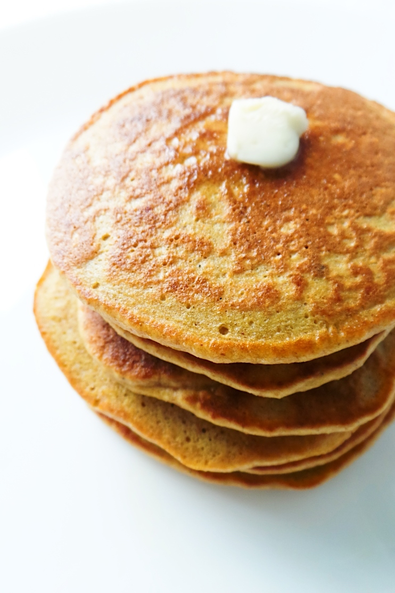

Oatmeal Pancakes

Description
It is very simple. Preparing the batter in the food processor makes it that much easier. Serve with syrup and
butter.
Also good with applesauce!
Ingredients
(yields 4 servings)
- ½ cup all-purpose flour
- ½ cup quick cooking oats
- 1 tablespoon white sugar
- 1 teaspoon baking powder
- ½ teaspoon baking soda
- ½ teaspoon salt
- ¾ cup buttermilk
- 1 teaspoon vanilla extract
- 2 tablespoons vegetable oil
- 1 egg
Preparation
- Place flour, oats, sugar, baking powder, baking soda, salt, buttermilk, vanilla, oil and egg in a food processor
and
puree until smooth.
- Heat a lightly oiled griddle or frying pan over medium high heat. Pour or scoop the batter onto the griddle,
using
approximately 1/4 cup for each pancake. Brown on both sides and serve hot.